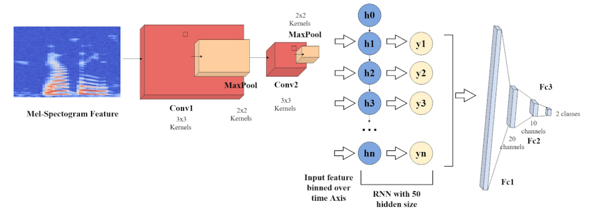

This page includes:
This was the most challenging course I've completed at UofT. It was one of the most rewarding and it pushed us to our limits. The course outline was to build a small quad-copter drone, demonstrate its capabilities through milestones from showing the propeller motors working to flying autonomously through unknown obstacles to a series of waypoints.
"No one lost their fingers. No fires. No explosion. We made it!"
Qihan Gao (honourary member), Leo Li, Mingshi Chi, Yannis He, Prof Kelly (back), Kelvin Cui
On the left is a diagram of the final milestone of avoiding each pillar in a particular direction based on pillar color while navigating to each waypoint along the way. Bellow shows our obstacle detection algorithm testing with a plot of the closest estimated point.
all nighter
One of our more successful runs of the final obstacle avoidance milestone
The Fall of Icarus - Qihan Gao
Unfortunately this documents one of many horrible drone crashes that occured over the course of this class. Each time, we would rebuild. Each time praying that our drone doesn't shoot up into the sky or into a window when we run new code or even old untouched code.
Members
ABSTRACT: Scene classification is an essential task in computer vision that involves categorizing an image into one of several predefined scene categories. Previous works for scene classification which global feature or topological representations or with the immediate representations of objects. One important use case in scene classification is in the context of service robotics that may need knowledge of the objects and their spatial relations in scenes for search and retrieval tasks. Recent popular approaches to scene classification may not capture the spatial relationships between objects in the scene. We propose a method to utilize the 3D spatial relationships between objects to better represent and classify scenes. This approach involves detecting 3D objects in the scene using a Frustum PointNets based approach with a fine-tuned model on the SUN RGB-D dataset and encoding their spatial relationships in a 3D metric space. The encoded spatial relationships are in a sequential order for object-to-object pair relations and are then used to predict the scene category by a Recurrent Neural Network (RNN). We report the results on both 3D object detection and scene classification against current state-of-the-art methods tested on the SUN RGB-D dataset. This scene classification method is additionally deployed on mobile video feeds from a stereo depth camera on a mobile robotic with high accuracy results to verify the effectiveness in real world environments.
DOWNLOAD2D object detection into region proposals. The points from the 3D frustum extracted from the 2D region proposals is then fed into a 3D object classifier for validation.
Top 1 sceen prediction: 76.9
Top 2 scene predictions: 87.1
Top 3 scene predictions: 90.9
This project was a part of a 30 year long project of Dr. Tsotsos. The motivation is for helping elderly people and children with disabilities to reduce physical work load for caregivers. I was a RA for 8 months at the lab doing research on developing controls and algorithms for collision avoidance for an autonomous wheelchair in dynamic environments. I incorporated static and dynamic obstacle avoidance methods while considering social factors using multiple sensors to perform localization and path planning. The wheelchair was equiped with encoders for wheels and a ZED2 stereo camera which has an IMU, barometer, and magnetometer.
Short demo of obstacle avoidance behaviour from point A to B
ABSTRACT: Within the field of autonomous driving, thermal imaging has recently been utilized within a number of ADAS pipelines. However, due to limitations with the development of thermal technology, resolution
of thermal images remains relatively small. Furthermore, large resolution thermal cameras have
become expensive. Hence, we propose the use of techniques for the generative upsampling of RGB
images in the context of ADAS Thermal image upsampling. The main motivation for this approach is
to allow users to purchase cheaper low-resolution thermal cameras then up-sample their output for detection tasks. Our upsampling approach compares different methods including: Residual Encoder-Decoder Network and Super Resolution ResNet to create a baseline. Finally, Pix2Pix Conditional Adversarial Network will be utilized in two ways to take the low resolution images as input and
generate high resolution output. We augment the UNet variant as well as ResNet to compare to the deterministic SRResNet. We will evaluate which approach produces better results empirically and
through the use of a thermal detection model trained on the FLIR Dataset images.
Members: Connor Lee, Martin Ffrench, Mingshi Chi
SRResNet results. Left picture is origin, middle is bicubic interpolation, right is neural net results
Introducing the HourCache: a user-friendly productivity tool that intuitively tracks where your hours are going! When placed on a particular side, the cube-shaped embedded system records your time spent on a corresponding, user-defined activity. This data is then synthesized and can be reviewed on our website. While the HourCache is rather simple in concept, it offers a powerful framework for time management if used diligently. It is no silver bullet, but to those who take seriously the daily challenge of keeping their concentration intact, the HourCache can offer a hand.
Members: Wei Hai Cui, Mingshi Chi, Xing Hao Li, Yannis He, Cameron Witkowski
When formulating the original plans, we had a few best alternatives so that during testing we would be able to see which alternative would be the best for the specific tasks we desired to perform. Ultimately, we converged on an ESP32 as our microcontroller as it has a faster clock speed, built-in wifi capabilities, more flash memory, and SRAM compared to the Arduino. For the orientation detection, we converged on using the ADXL345 accelerometer chip. And we decided on wifi communication by using the user’s own IP address and wifi service to host a temporary webpage that holds the time information on the different states.
The goal of this project is to develop a CNN speech accent classifier which intakes an accented English phrase as input and correctly identifies the origin of the speaker’s accent. This goal is motivated by direct experiences with voice-controlled devices not understanding heavily accented English, which is especially prominent in immigrant families and friends. An accent classifier contributes to solving this problem by enabling the subsequent use of accent-specific text-to-speech algorithms to improve the voice-controlled device experience for accented speakers.
Members: Rocco Ruan, Julia Chae, Catherine Glossop, Mingshi Chi
Data processing pipeline
Neural Net Architecture
CRNN results compared to SVM results
With a team of 3, we designed, manufactured, and tested an autonomous robot with the purpose of placing a Tesla car charger into the charging port and removing it after the charging is finished.
We used Arduino, Pixy, arduino sensors, Python opencv, CAD, DC motors, and stepper motors.
Members: Mingshi Chi, Catherine Glossop, Daniella Luna
Mingshi Chi, Catherine Glossop, Daniella Luna
Milestone 1 required that the robot be able to have mobility and insert an end effector into the charging port. We used a pen as an end effector.
Due to Covid-19 and schools shutting down, we were not able to implement the autonomous parts yet. The rover was controlled by a remote control via bluetooth to the arduino from a phone.
In preparation for autonomous delivery, I coded a script for the rover to identify pretrained imaged of the charging port. The model was fed 40 images of the charging port and the x and y position of the port was located using feature matching by taking frames from the continuous camera view.
GITHUB In a group of 4, we were tasked with finding a solution to find the perfect time for sourdough proofing to minimize food waste in bakeries.
We designed a 2D axis similar to a 3D printer and used sensors and integration with time to calculate and predict the ideal time to put the dough in the oven
Members: Julia Chae, Mingshi Chi, Daniella Luna, Peter Sorbos
The picture on the right shows the building process of our prototype design
To test our solution, we baked bread ourselves and put the dough in the oven based on the time predicted
With a group of 3, we were tasked to use the knowledge gained in our CIV102 class to build a cardstock bridge that can withstand 1kN of force and optimize for stress and strain on different parts on the bridge The building process took 2 whole days (Including an all nighter). The calculations took a day. We were locked up in a poorly ventilated dorm room breathing in glue fumes. It was a great bonding experience nontheless.
Members: Nikoo Givehchian, Mingshi Chi
During the final test of our bridge, it was put under a baldwin which measures just how much force it is able to withhold. We aimed for 1.8kN in our calculations. We reached 753N which is just short of the 1kN we were aiming for. Failure occured at the flanges which rotated and buckled. There were not enough diaphrams to prevent twisting.